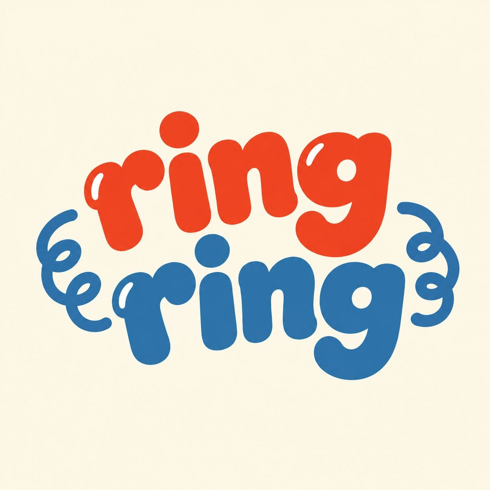

Placeholder tagline: real words are on their way.
This line is a stand-in. Nobody has written down what ring ring actually is yet, so this page says nothing about it: no features, no pricing, no promises. When the real description arrives it replaces this paragraph.